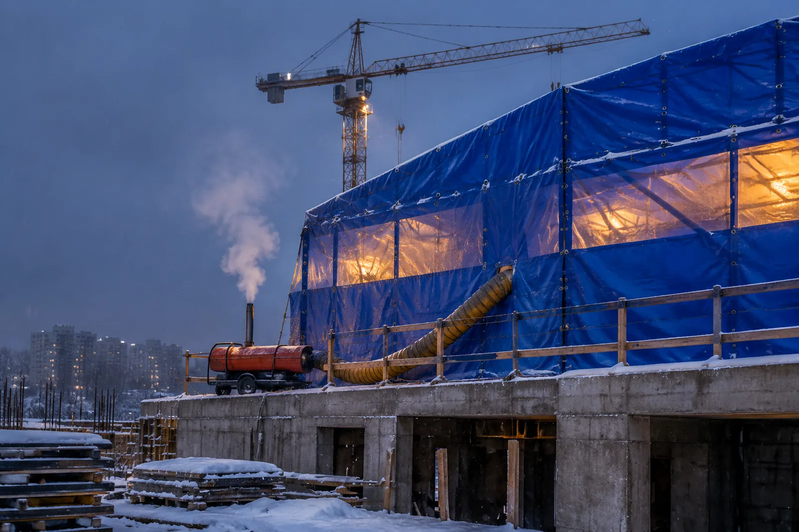
Тепляк строительный
под ключ: каркас, тент и тепло одним подрядчиком
Закроем зону работ на зиму: соберём каркас, натянем ПВХ-тент Г1, привезём пушки и топливо, оставим дежурного техника. Работы идут по графику, а не по погоде.
Сколько нужно тепла
Размер и мороз — подберём пушки из парка
Расчёт отправленИнженер перезвонит в рабочее время и уточнит площадку.
Прикидка для тента с воротами. Точную мощность и цену считаем под объект.
Какой тепляк подойдёт
Форму крыши выбирают по месту и по снегу: чем меньше объём, тем дешевле его греть, а чем круче скат, тем меньше чистить кровлю.
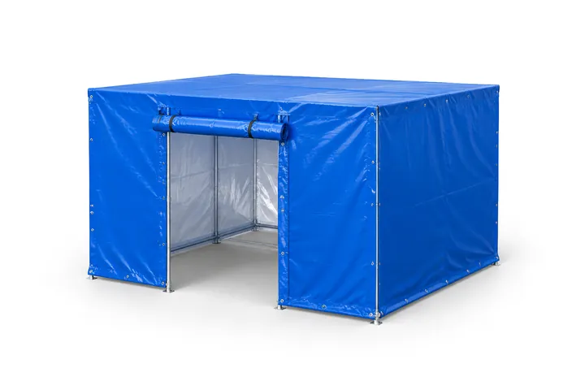
С плоской крышейпод мостом, эстакадой, в здании Когда сверху уже есть перекрытие: закрываем только стены, греем минимальный объём. Самый недорогой вариант.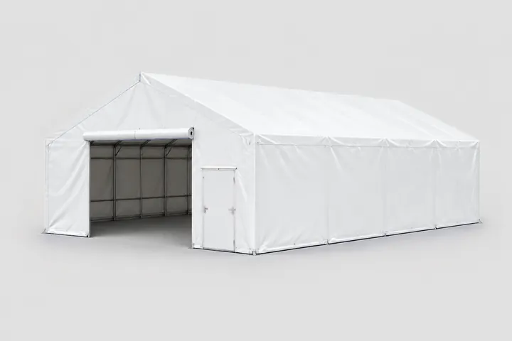
Двускатныйоткрытая площадка Ходовой вариант для монолита и кровли. Ворота под технику, дверь для людей. Снег с кровли чистим по регламенту.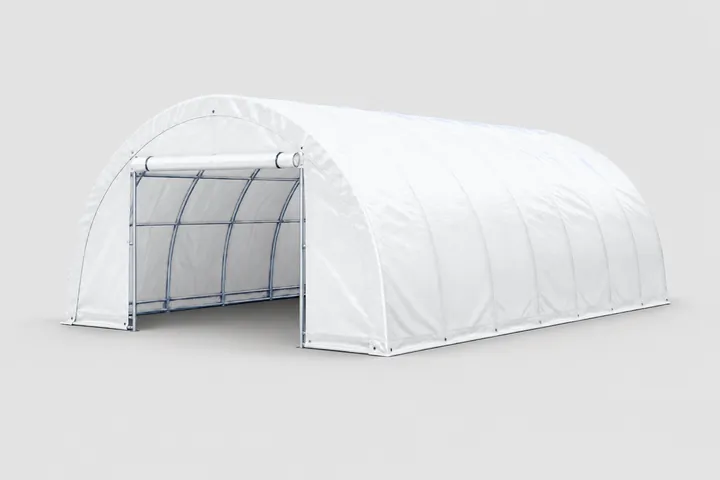
Арочныйдолгая зима, большие площади Снег сходит сам. Подходит для III снегового района, если это подтверждает расчёт нагрузок.Три способа закрыть объект
Цену считаем под объект: она зависит от площади, высоты, срока и того, что уже стоит на площадке.
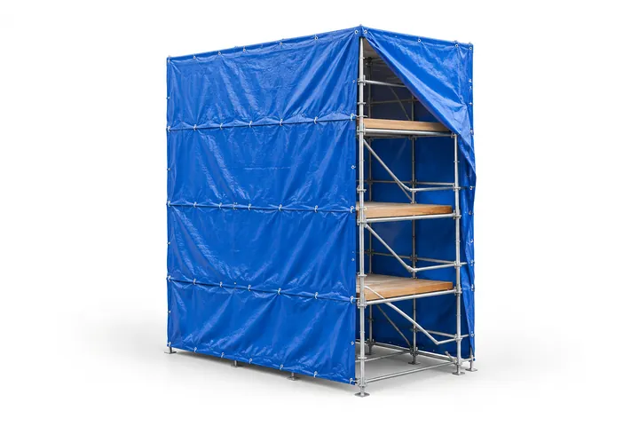
Тент на ваши леса Леса уже стоят — шьём полотно в размер и монтируем. Быстрее всего закрыть контур.- ПВХ 650 г/м² (Г1) или тарпаулин 180–270 г/м²
- Люверсы, усиления, карманы под трубу
- Полотно без монтажа — отгрузим ТК по России
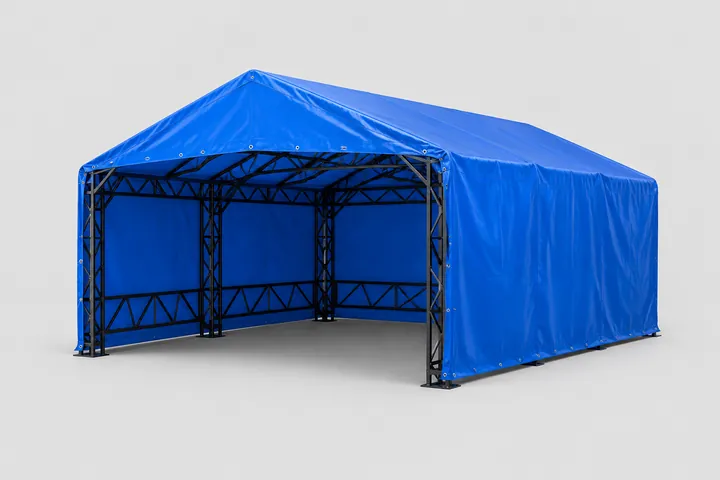
Каркасный теплякберут чаще всего Свой каркас и тент — не зависите от конструкций на объекте. Сталь, алюминий, фермы или лаер — под задачу.- Анкеровка или пригруз, ворота и двери
- Паспорт, инструкция, схема монтажа для ППР
- Гарантия год на полотно и каркас
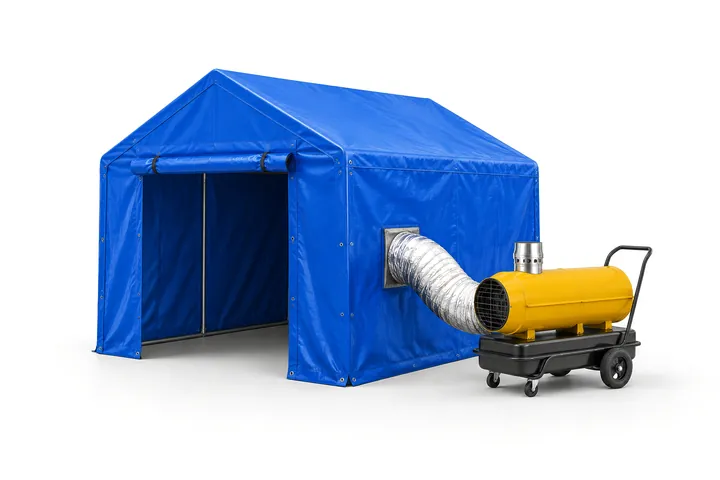
Тепляк с отоплением Сдаём не тент и пушки по отдельности, а плюсовую температуру внутри.- Всё из каркасного тепляка
- Пушки, разводка, подвоз топлива
- Дежурный техник и журнал прогрева
Наш объект: тепляк под эстакадой
Сверху — перекрытие, по бокам — каркас из ферм и лесов, обтянутый тентом. Внутри уже можно работать при минусе снаружи.
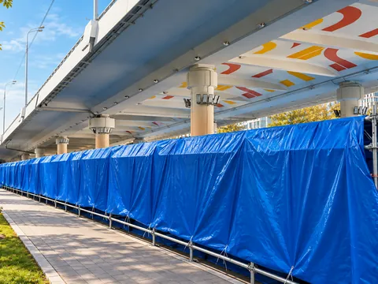
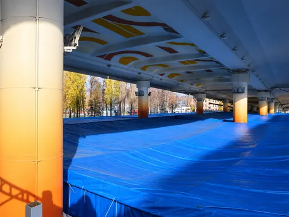
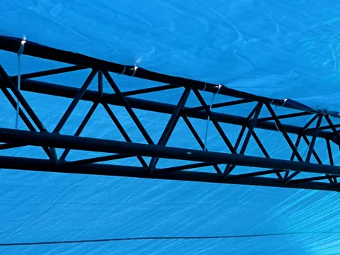
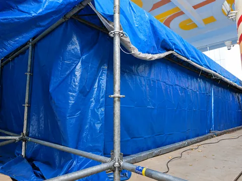
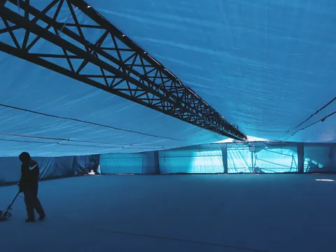
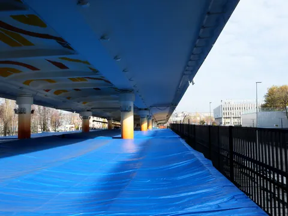
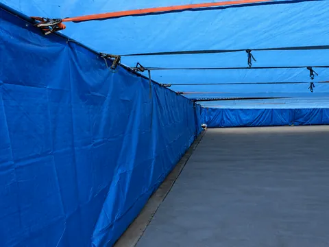
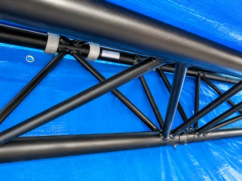
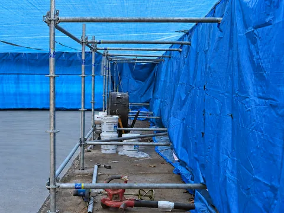
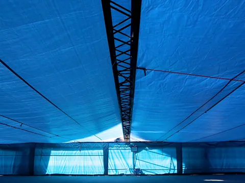
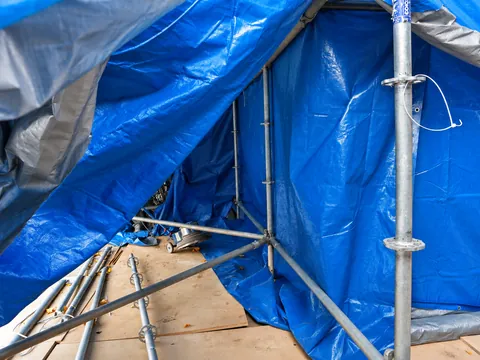
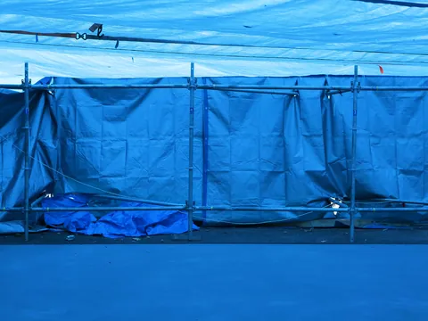
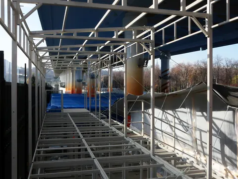
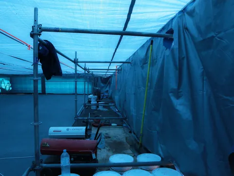
Тепляк без тепла — просто тент
Привозим обогрев вместе с контуром, разводим, подвозим топливо и следим за температурой. Где внутри работают люди — ставим непрямой нагрев с отводом выхлопа.
- Мощность считаем под объём и мороз
- Дизель на объект — наша забота
- Дежурный техник: обход, журнал прогрева, ремонт порывов в течение дня
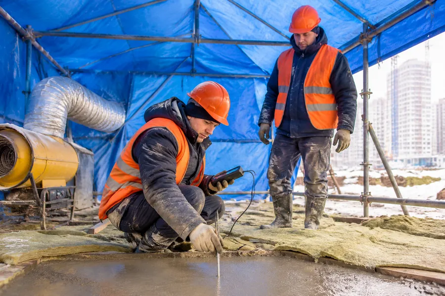
Где нужен тепляк
Везде, где технология не терпит минуса или работе мешают снег и ветер.
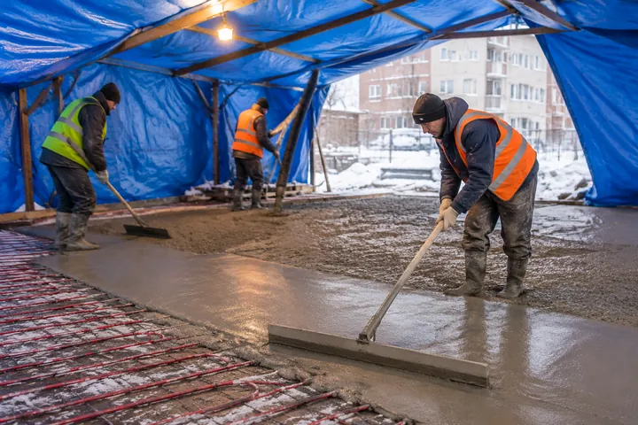
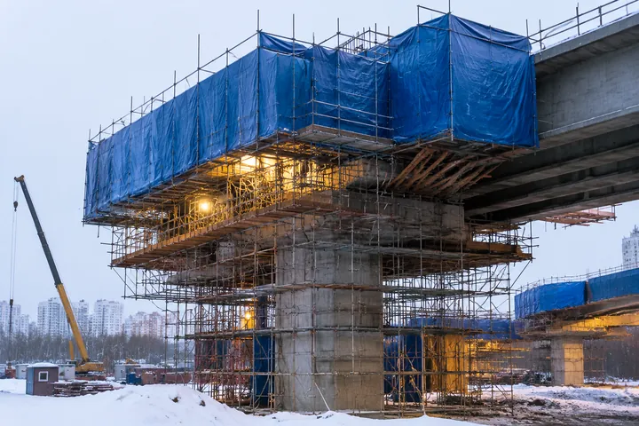
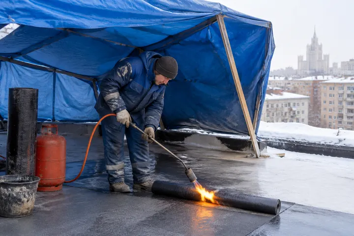
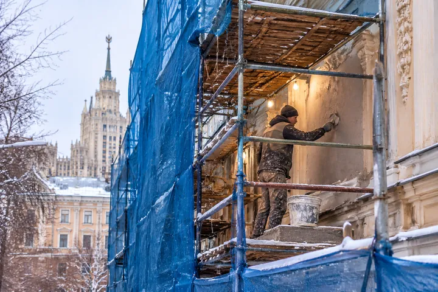
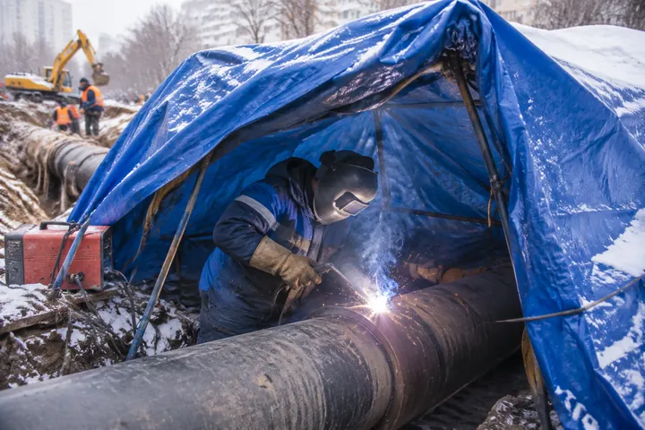
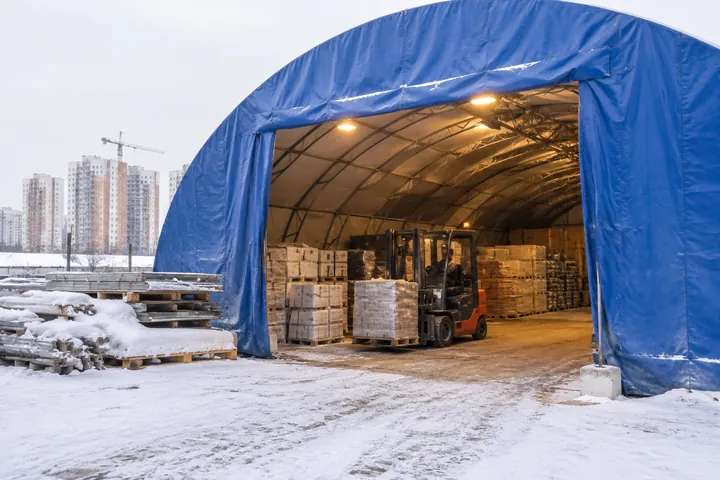
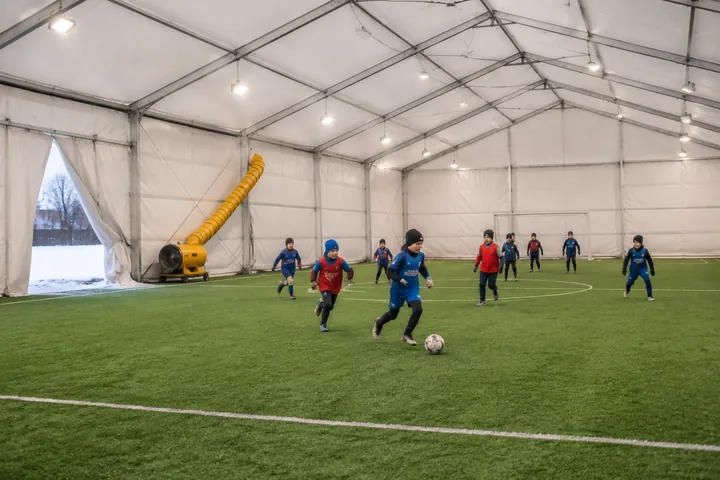
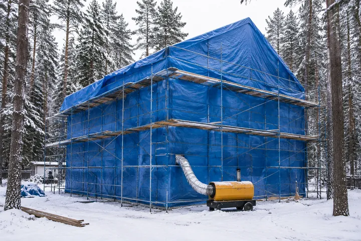
Документы для ПТО
Что даём сразу, а что делаем отдельной услугой — чтобы вопросы про снег и ткань не всплыли после договора.
Кто за что отвечает
Делим зоны до договора, чтобы на объекте не было «мы думали, это ваше».
Мы
- Замер, подбор конструкции и обогрева
- Каркас, тент, анкеровка или пригруз, ворота
- Монтаж и демонтаж своей бригадой по вашему режиму допуска
- Пушки, топливо, дежурный техник
- Обход и ремонт порывов
- Вывоз комплекта после работ
Вы
- Пропуска для бригады и техники, место под разгрузку
- Ровное основание, возможность анкеровки или место под пригруз
- 380 В, если выбран электрообогрев
- Наряд-допуск на огневые работы внутри контура
- Очистка снега, если не передали её нам
- Сохранность комплекта на площадке
От заявки до тепла — около недели
Условия аренды
- Срок
- Любой: от недели до сезона.
- Скидка
- От трёх месяцев — скидка, на сезон — отдельные условия.
- Монтаж и доставка
- Отдельной строкой, от площадки и удалённости.
- Залог
- Фиксированный, процент или банковская гарантия — по договору.
- Выкуп
- Возможен: обсуждаем на старте.
- Оплата
- Работаем с юрлицами, отсрочка — по договорённости.
Про снег — сразу
- Кровлю плоских и двускатных тепляков нужно чистить — регламент в договоре
- Арочные — для III снегового района при подтверждении расчётом
- Лёгкие ивент-павильоны под зимнюю стройку не предлагаем
Вопросы о тепляках
Сколько стоит тепляк?
Считаем под объект: площадь, высота, срок, обогрев и что уже есть на площадке. Минимальный объект — от 100 000 ₽. Пришлите размеры — вернёмся со сметой.
Тент не загорится от сварки?
ПВХ-тент — группы горючести Г1, сертификат дадим. Огневые работы внутри ведутся по наряду-допуску с экранами — это зона заказчика.
Выдержит ли снег?
Арочные конструкции сбрасывают снег сами и подходят для III снегового района по расчёту. Плоские и двускатные требуют очистки — фиксируем регламент. Официальный расчёт по СП 20.13330 делаем отдельной услугой.
Отопление ваше?
Да. Дизельные пушки 80 и 20 кВт, электрические 9 и 15 кВт, ИК для рабочих мест. Привозим топливо и оставляем дежурного техника.
Поставите тент на наши леса?
Да: сошьём полотно в размер и смонтируем. Можно купить только полотно — отгрузим транспортной компанией.
Есть утеплённый тент?
Да, двухслойный ПВХ с утеплителем 10 или 20 мм — для длинных объектов и сильных морозов. Наш ПВХ работает до −40 °C.
Работаете за пределами Москвы?
Основная зона — Москва и область. Дальние объекты обсуждаем, полотно отгружаем по всей России.
Почему тепляки у «Аренда Плюс»
Из чего состоит тепляк — каркасы, тенты, пушки, бригады монтажников, склад — у нас уже есть: мы много лет ставим шатры и павильоны на мероприятиях круглый год. Зимой этот парк закрывает стройки.
Строительный тепляк — временное сборно-разборное укрытие, внутри которого держат плюсовую температуру: бетон набирает прочность, кровля наплавляется, сварка и фасадные работы идут без остановок на погоду.
Сдаём тепляки в аренду и продаём: каркасные с плоской, двускатной или арочной крышей, тенты на леса заказчика и полотна в размер. Обогрев, топливо и обслуживание — в том же договоре.
Склад открыт для осмотра: покажем каркасы, тенты и пушки до подписания договора.
Пришлите размеры — посчитаем
Длина, ширина, высота и срок — этого хватит, чтобы назвать стоимость аренды или покупки и мощность обогрева. Если считали в калькуляторе, расчёт уйдёт вместе с заявкой.
- до 25 мпролёт без опор
- 250 м²монтаж за смену
- Г1ПВХ-тент
8 (495) 256-40-47 · звонок быстрее формы
info@arenda-attrakcionov.ru
Москва, Егорьевский проезд, д. 2а, стр. 10
Заявка принятаПерезвоним в рабочее время, уточним объект и пришлём смету.